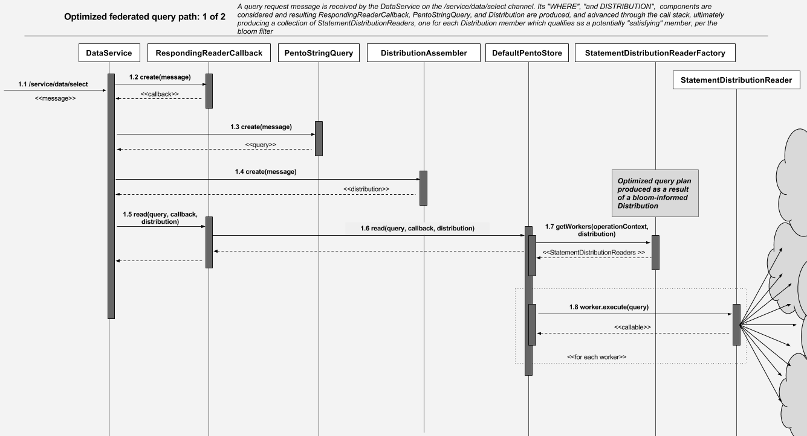

Statement Distribution and Bloom Filter Lifecycle
Shadowman leverages a bloom filter implementation to dynamically produce BayeuxClientDistribution instances which intelligently exclude the agents from a query's distribution that are known not to contain statements which would satisfy the query.
The following abstractions form the core of the bloom filter system.
- StatementDistribution: A probability distribution that will define if a PentoQuery will return results from this distribution.
- BloomFilter: The bloom filter implementation
- BloomFilterStatementDistribution: An StatementDistribution implementation which leverages a BloomFilter to determine probability
- StatementDistributionReader A PentoStoreWorker implementation which performs distributed query as informed by its StatementDistribution implementation
- StatementDistributionReaderFactory: A PentoStoreWorkerFactory implementation which produces StatementDistributionReader to perform distributed query informed by its StatementDistribution implementation. Shadowman utilizes the PentoStoreWorkerFactory in combination with the DefaultPentoStore to automatically produce optimized federated query.
- StatementDistributionRepository: A Repository implementation and SimpleObjectRepository wrapper which provides file-based storage and retrieval of serialized StatementDistribution instances
- HttpStatementDistributionDownloadService: A StatementDistributionUpdateLoader implementation responsible for pulling StatementDistributions as application/octet streams via HTTP from remote agents
- StatementDistributionServlet A HttpServlet hosted by each agent which services incoming StatementDistribution download requests as issued by HttpStatementDistributionDownloadService
The following sequences describe the primary flow of logic through Statement Distribution and Bloom Filter Lifecycle components
Optimized Federated Query
Shadowman's optimized federated query capability begins at the DataService , a CometD service accepting a WHERE clause on an inbound "/service/data/select"" channel and ending by delivering all results through an outboud "/data/selected" channel.  
Futher development
Note that the current bloom implementation does not support deletes. It is recommended that future development migrate to a counting bloom implementation to address this limitation. Future work should also consider a mechanism where by a bloom filter can be rebuilt from the underlying database as part of a routine database operation. For this reason, it should be known that all delete operations will not properly inform the bloom filter that deleted facts are no longer at rest within the store, resulting in a higher rate of false positives throughout the quorum.